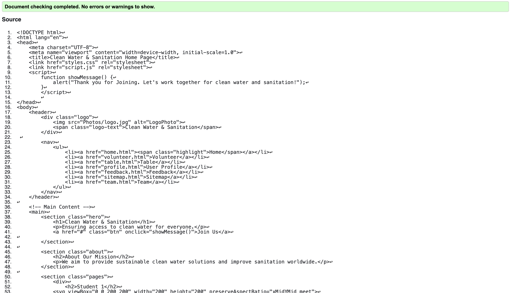

Home Page validation report
I had an issue with duplicate id values in SVG elements. Since IDs must be unique in a document, we modified them by appending unique identifiers (e.g., quadrant-1, quadrant-2).
Global CSS validation report
Back to Page Editor
Table Page validation report
One of the primary issues detected was the incorrect use of alt attributes for images. Some flags and the logo image were missing descriptive alternative text, which is essential for screen readers and accessibility. This was resolved by ensuring all images have meaningful alt attributes.
Back to Page Editor
Content Page validation report
One common issue was the incorrect nesting of elements, such as placing a button inside an "a" tag, which is not allowed by HTML standards. Additionally, some images were missing alt attributes, which are crucial for accessibility. Another mistake was using width="800px" instead of just width="800", as HTML expects numeric values without units.